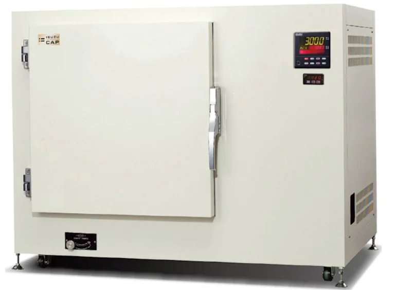

点検・保守
装置の状態確認や定期的な点検についてご相談いただけます。
SUPPORT / PRODUCT ASSISTANCE
取扱説明書の確認から、修理・点検・校正まで。
ご使用中の装置について、必要な情報とご相談先をご案内します。
お困りの内容からお選びください
01 / MANUAL LIBRARY
型式や資料名から、お使いの装置に関する取扱説明書を探せます。
検索結果は既存公式サイトで公開されている資料への案内です。
旧型式や別表記の場合は、お使いの機種名・製造番号を分かる範囲でお問い合わせください。
サポート窓口へ相談する ↗資料の改訂状況・適用型式は確認が必要です。実際の操作前には必ず装置の型式・製造番号と資料の適合をご確認ください。
制作確認事項：77原本中1件（TPCSシリーズ）の公開可否と、資料の版・権利・新URLは未承認。
02 / REPAIR SERVICE
不具合の内容と製品情報を整理し、修理に関するご相談先をご案内します。

お問い合わせの際は、次の情報を分かる範囲でご用意ください。
分からない項目がある場合も、まずはご相談ください。
現在の修理規定・保証・料金・見積条件・写真添付方法は、営業・技術担当の正式確認後に反映します。制作段階では既存の案内を参照し、確定していない日数や金額を表示しません。
03 / MAINTENANCE & CALIBRATION
装置を長く安定して使用するためのサポートについてご案内します。
装置の状態確認や定期的な点検についてご相談いただけます。
試験条件の管理に関わる校正について、対象機種や内容をご確認ください。
使用環境の変化に伴う移設・改造などについて、装置の情報をもとにご相談ください。
対象機種・対応範囲・費用・出張条件は個別確認となります。
サポートについて相談する ↗制作確認事項：校正証明書、点検周期、出張エリア・料金基準は正式情報の提供待ち。
05 / PREVIOUS MODELS
以前の製品をご使用中の場合も、型式をご確認のうえご相談いただけます。
［サンプル表示］ 旧型式 ｜ 現在の取扱い ｜ 取扱説明書 ｜ 修理可否 ｜ 後継機種
この表は型式・販売状況・対応可否の正式確認後に公開します。
制作確認事項：後継機種対応表は西澤マネージャー確認中。未確定な互換性や部品供給年数は掲載しない。
06 / FAQ
よくあるお問い合わせを整理しています。正式FAQ原稿を確認でき次第差し替えます。
［サンプル文］このページの「取扱説明書を探す」から、型式や資料名で検索できます。お使いの製品に適合する資料か確認のうえご利用ください。
［サンプル文］分かる範囲の製品情報と症状をお知らせください。詳しい確認方法は担当窓口から案内する想定です。
［サンプル文］製品の型式・状態・部品の供給状況などにより対応が異なる場合があります。詳細は担当窓口へお問い合わせください。
制作確認事項：三者共有タスク表では2026/10/30にFAQ回答格納・確認完了と記録。原本文書は未取得のため、このサンプルの公開は禁止。
07 / SERVICE NETWORK
製品の導入後も、装置の運用に関するご相談に対応します。
ご使用中の装置や設置場所、相談内容に応じて、担当部門が確認します。
対応拠点・エリア・出張条件はお問い合わせ時にご確認ください。
制作確認事項：サービス担当常駐拠点、JR主要駅を含む従来の案内表示、出張費の算出基準地点は要確認。